Branding & Advertising
MGT 100 Week 7
This version: April 2026 | License: CC BY 4.0 | We use javascript to track readership.
We welcome reuse with attribution. Please share widely.
Branding
- Perception and brands
- Logos, Netflix & Kraft case studies
- What is a brand?
When I say brand, most people think about logos. What are the hidden meanings in these images?
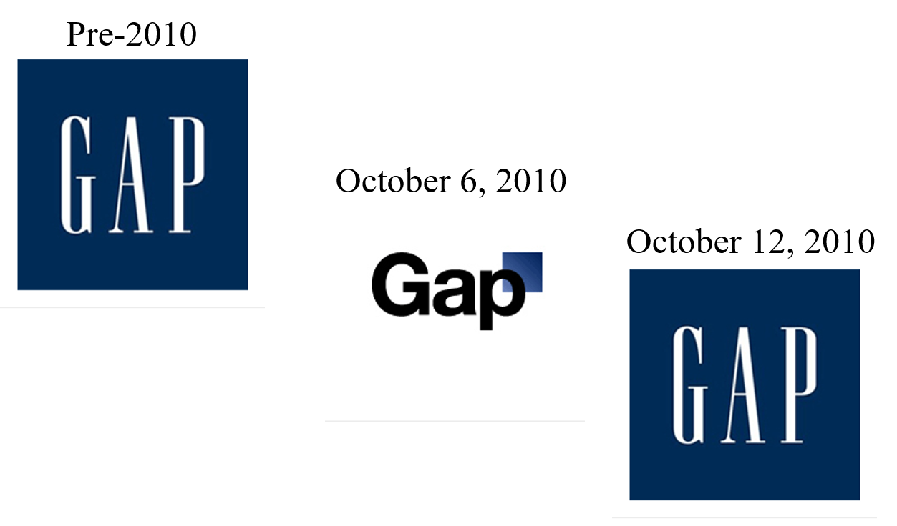
Gap launched a multimillion-dollar redesign in October 2010 and scrapped it six days later after a backlash. Why?
UC paid a relatively paltry $386k for this new logo, but we only kept it for five days. Why?
Westinghouse stopped making things decades ago, but the brand earns licensing revenue–100% margin. How can a brand outlive its company?
Case study: Netflix
- 1997: Founded to deliver movies over the internet
- 1999: Pioneered DVD-by-mail
- 2007: Launched streaming
- 2011: July price hike, Sept service split into
- Netflix: Video streaming
- “Qwikster”: Rebranded DVD-by-mail service
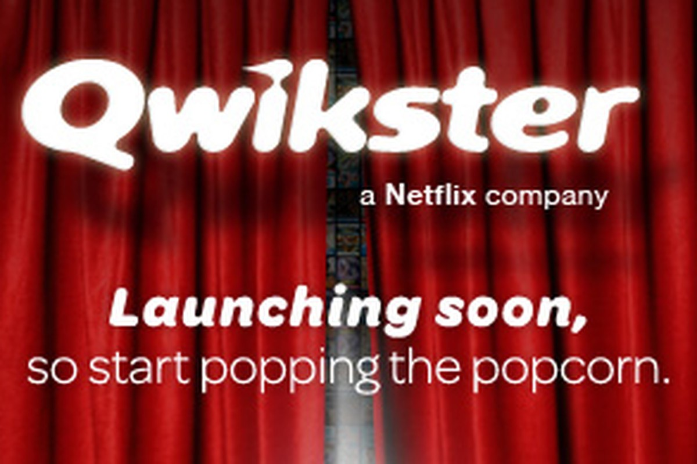
This case study is ancient but it makes a key point
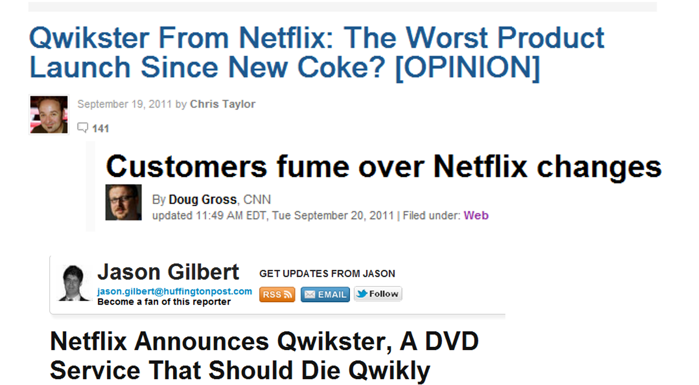
The market reaction was as vicious as I’ve ever seen
CEO Reed Hastings apologized on video — but said Netflix would proceed with the split anyway, and introduced Qwikster CEO. Guess how many people saw this video on youtube?
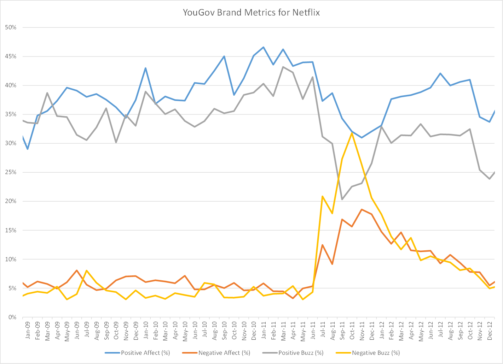
These are called monthly brand tracking statistics, summarizing surveys from ~2,400 respondents/month. Affect means, How do you feel about Netflix? Buzz means, What have you heard about Netflix? Answers could be positive, negative, or nothing. First shift was the July price hike; the second was September’s rebrand. What do you see?
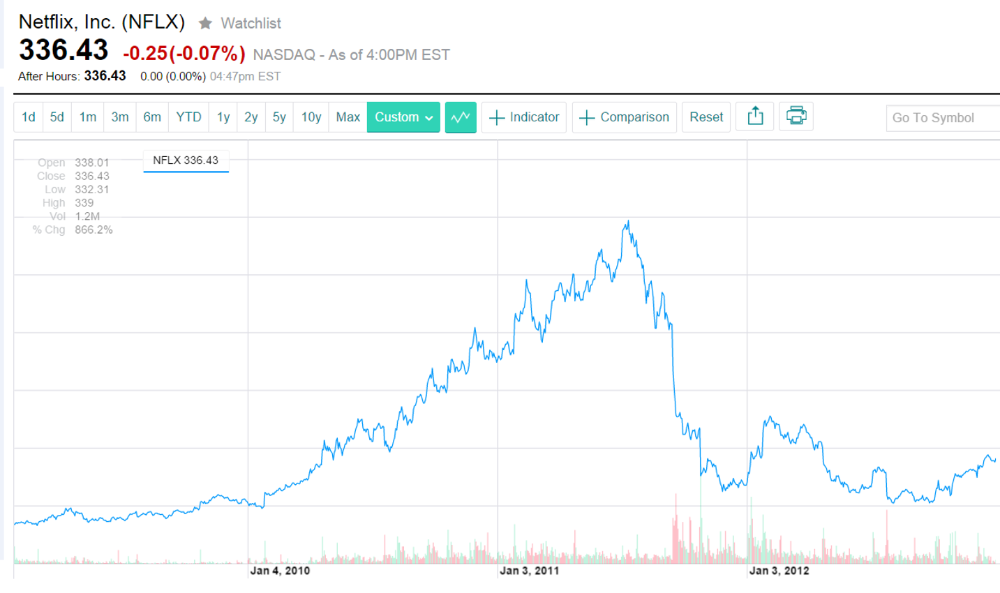
Note the vertical drop in the stock price on the rebranding date. The second, smaller drop was when they announced they were going ahead with it. Netflix dropped the rebrand shortly after
Netflix Case study: Takeaways
- Brand adjustments require consumer acceptance
- You own the IP, not the mental real estate
- Smaller steps encounter less resistance
- Great brands monitor customer perceptions
- If you mis-step, change course – some news is bad news
Coda: DVD-by-mail business fell by 90% from 2010 to 2019, then Netflix announced a gradual phasing out
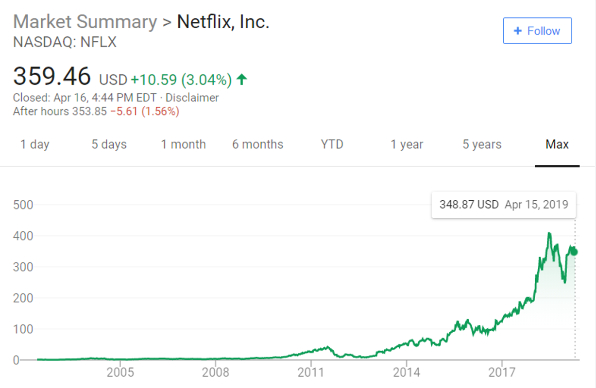
Case study: Kraft Mac n Cheese
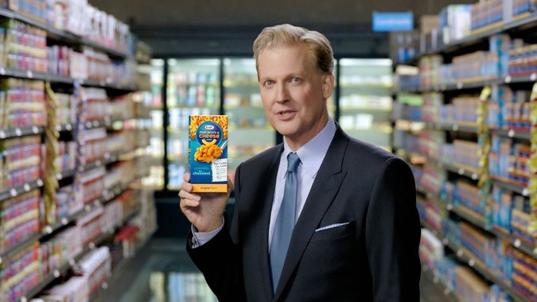
Kraft quietly dropped Yellow 5 & 6, artificial flavors and preservatives–replacing them with paprika, annatto, and turmeric–then announced the change after 50 million boxes had shipped. “We’d invite you to try it, but you already have.”
What is a brand?
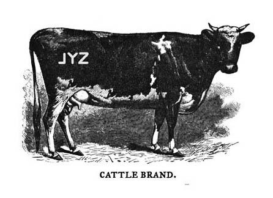
The word “brand” comes from the Old West; it was a theft deterrent, but it came to mean much more
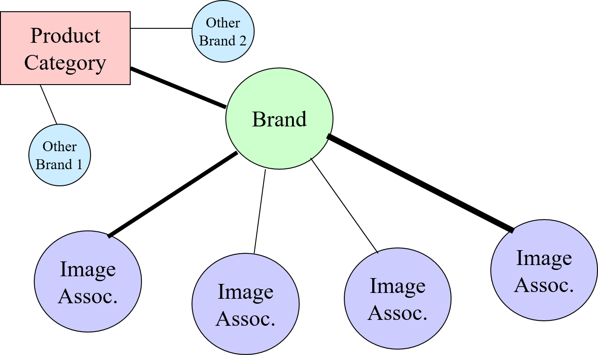
Memory is an “auto-associative network.” A brand is defined by the network of concepts it connects to in human memory, including the product category, among other associations
What is a brand?
- An idea that shifts preference
- Brands reside in consumers’ minds
- Mental real estate: Firm owns trademark but not brand
- Rooted in reality but reflects consumer experiences, perceptions and idiosyncrasies
What can be branded? Physical goods, services, retailers, organizations, people, places, activities, even fictional characters
Some auto-associative sequences
Why do firms spend so much to create these associations in consumers’ minds? “Search markets” vs. “Selection markets”
What association?
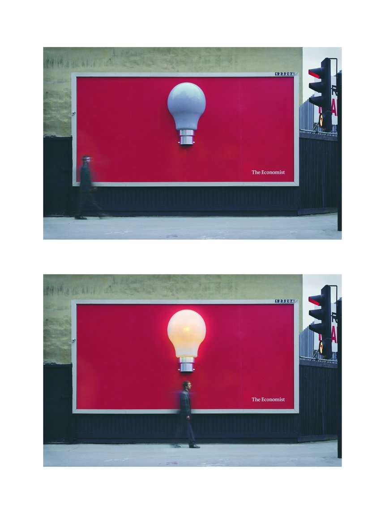
Firms often seek to influence their brand associations. Here, the Economist seeks to influence consumer perceptions of its trademark as a source of bright ideas. When will this work? It depends on what consumers will accept
Brand Safety
- Brands try to avoid unsavory associations – misinformation, hate, violence, obscenity, etc – as they may upset consumers, generate embarrassing publicity, and create unfavorable brand associations
- Brands have long demanded advertising-supported platforms maintain “brand safety” via content moderation
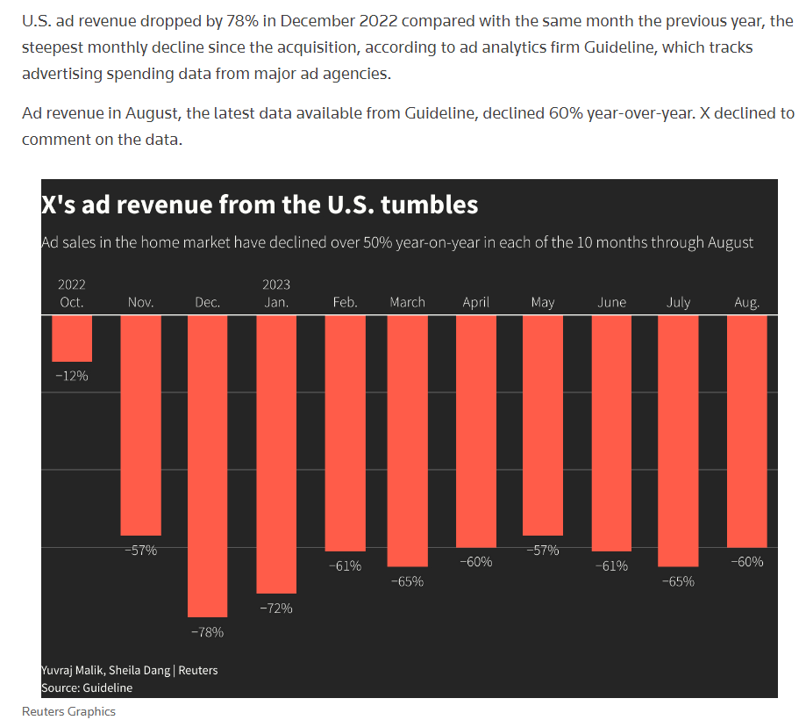
Have you ever heard of “brand safety?” When Twitter/X’s new owner announced the shift to a “free speech platform” without content moderation, advertisers asked him to reconsider due to brand safety risks. Brands believe that proximity to unsavory content will damage brand associations
How do Brands Work?
Credibility
Rapid communication
Personality & Self-expression
Gestalt
1. Credibility
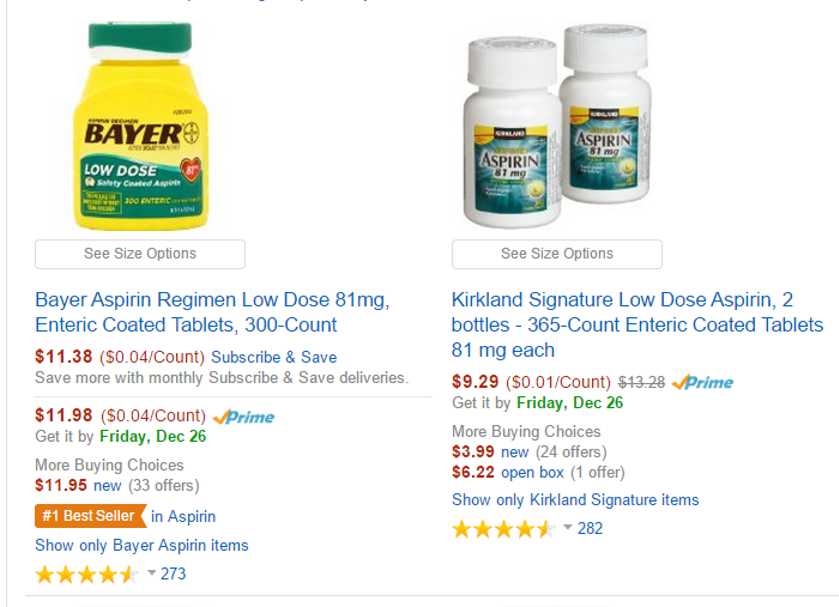
Bayer introduced Aspirin as one of the first patented drugs in the U.S. Aspirin went off patent in the 1950s, and Bayer lost trademark ownership due to genericization after that. Yet Bayer still charges a premium price over nearly identical competitors
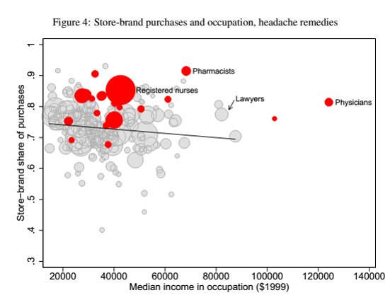
This figure summarizes millions of shopping trips by head-of-household profession. Store-brand shares are high in headache remedies, due to price differentials. Yet household income barely predicts store-brand share. Medical professionals tend to buy store-brands more often; why?
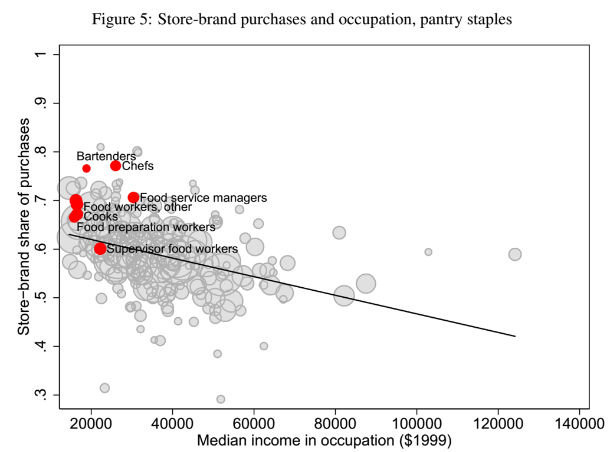
Similar pattern in commodity foodstuffs (baking soda, plain salt, sugar, etc): Food service professionals more often avoid paying the brand premium due to high product knowledge
What happens when consumers gain knowledge?
- Bron. et al. (MkSc 2020): Intercepted shoppers in-store
- First, a survey, including:
- Q2: Do you prefer private label or nat’l brand? (NB=0, PL=1)
- Then, a blind brand/PL taste test, followed by
- Q3: Which did you prefer? (NB=0, PL=1)
- Q4: Will you buy PL next time?
Some shoppers said they prefer the National Brand, but learned they prefer the Private Label (Q2=0, Q3=1); some said they prefer the Private Label, but learned they prefer the National Brand (Q2=1, Q3=0); the remainder confirmed their expectation. How do you think stated preferences changed in each case?
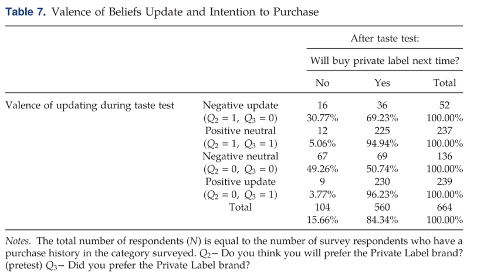
The intervention had a dramatic effect on stated preferences among those who said they preferred the National Brand, but then learned they preferred the Private Label. Recall that the Private Label is cheaper. Have you ever given yourself a blind taste test to learn your own preferences?
PL Share among Surveyed Shoppers
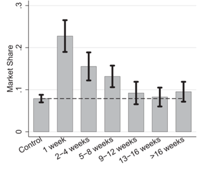
A cool thing about this study was that survey answers could be linked to frequent shopper cards, so researchers observed subsequent purchases. This is a large impact for a one-time intervention. Why did the effect fade with time?
1. Credibility: Takeaways
- Less-knowledgeable consumers are more likely to pay the brand premium
- Recognized brands assumed better/safer than alternatives
- Informing consumers can change brand/PL sales
- Changes may be transitory
Calls back to pricing discussion, how consumers infer unobserved product quality based on price and other signals that would be costly if the firm does not deliver as expected
2. Rapid communication
- Names and graphics
- facilitate understanding
- call attention to differentiating attributes
- What is the value proposition?
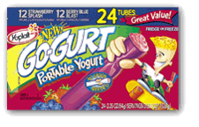
Target: Busy 8-12-year-olds. Differentiation: no spoon. Intangibles: easy, cool, fun. Helped General Mills overtake Dannon in a mature product category.
3. Personality & Self-expression
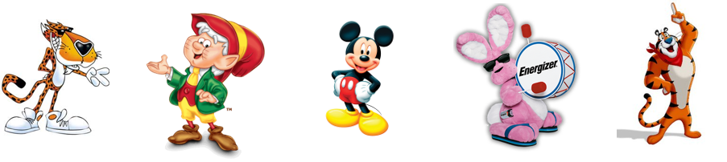
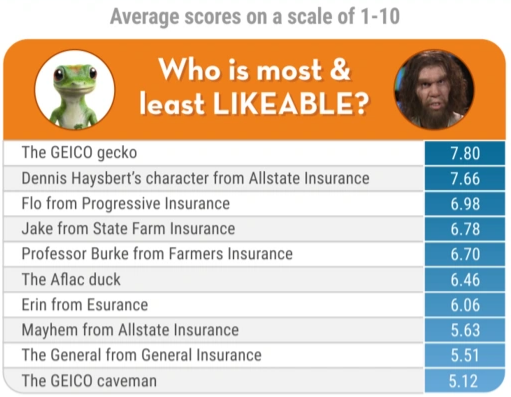
Geico is in the business of pricing risk. Insurers commonly seek to humanize themselves to seem approachable. As a former Met Life employee told me: “We used to talk about it all the time. We would be nothing without that stupid dog.” (Snoopy)
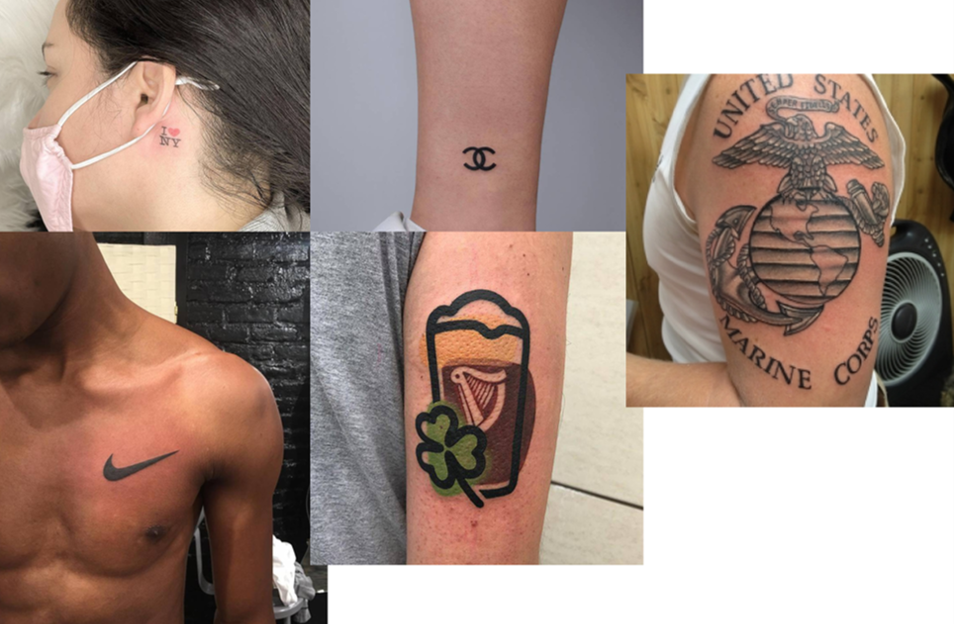
Does anyone here have a brand tattoo? What do these tattoos say about their wearers? About their brand relationships? We are getting back to the original definition of branding
Brands can
- Express shared identities: UC San Diego, San Diego Padres
- Personify seller attributes, eg Jordan Brand, Kylie Cosmetics
- Adopt a common brand “personality”
- Classic/sincere, eg Hallmark, In-n-Out
- Competent, eg IBM, Amazon
- Exciting/fun, eg Snapchat, Scion
- Sophisticated, eg Tiffany
- Calm/peaceful (more common in East Asia)
Best practice: match brand personality to value proposition and target customer’s preferences or aspirations
4. Gestalt
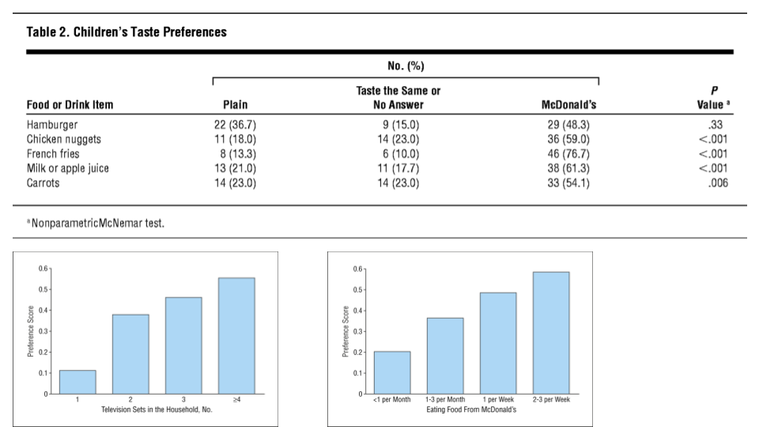
We have much evidence that branding can complement product consumption. In this study, 3-5 year olds were given identical food in McDonald’s branded containers or plain containers, and asked which version tasted better, indicating the McDonald’s-branded versions for 4 out of 5 foods. Brand preference increased with TV exposure and brand experience. Neuroscientists gave Coke or Pepsi to subjects in fMRI machines, reporting that “In the brand-cued experiment, brand knowledge for one of the drinks had a dramatic influence on expressed behavioral preferences and on the measured brain responses.”
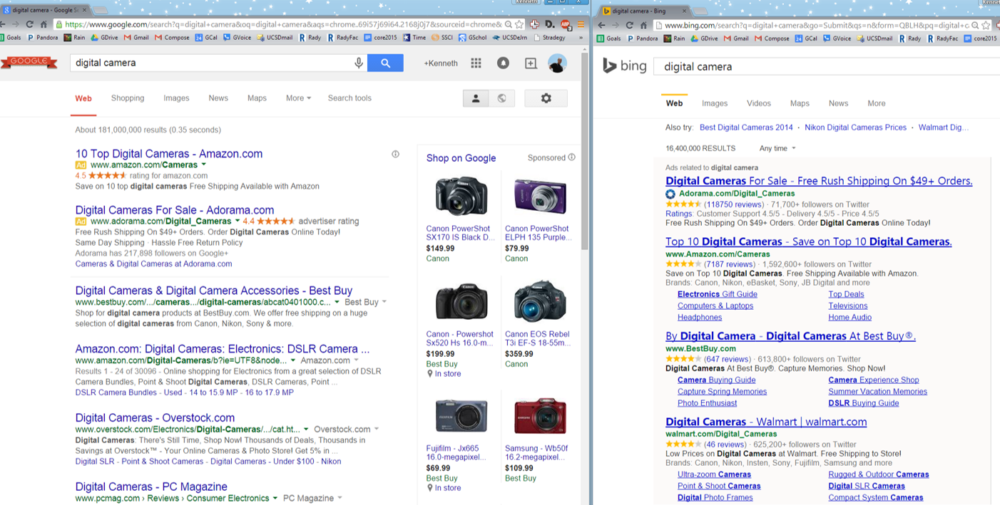
One way Google tracks its own brand strength is to compare preference differentials in its own search results compared to Bing’s, vs. Bing’s results in Google’s format compared to Google’s results in Bing’s format. Brand dominates content in predicting preference
Creating artificial differentiation
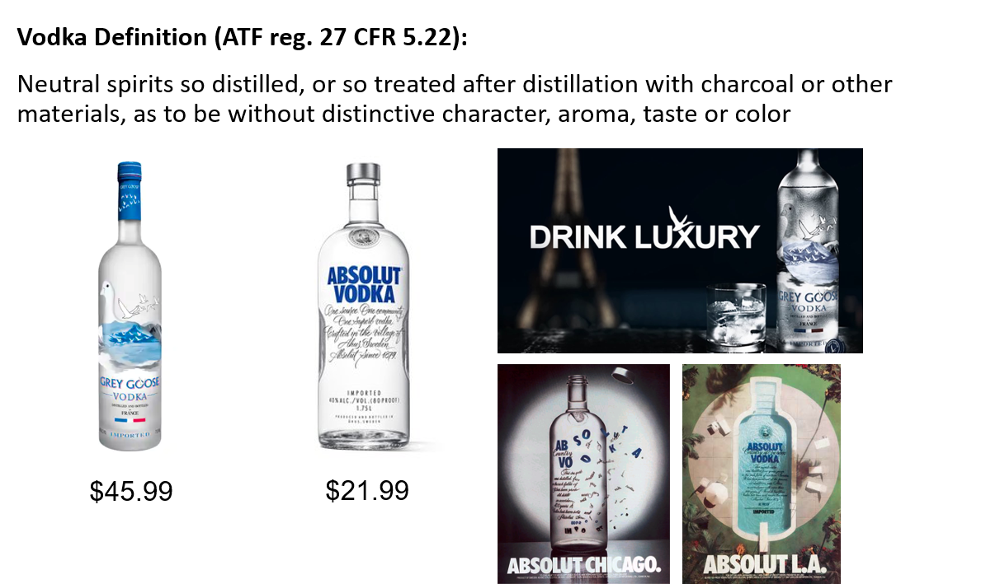
The vodka category proves that branding can create differentiation that relieves pricing pressure. It costs around $5 to make a low-end bottle of vodka, $15-17 on the high end
Liquid Death’s Brand Strategy
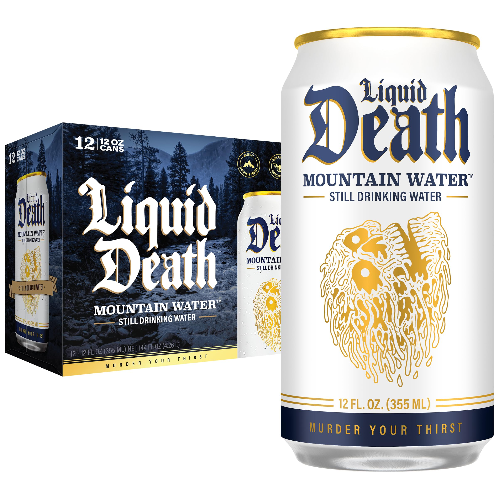
- Build an entertainment-first brand
- Comedy is the one thing Coke and Pepsi can’t do
- Prioritize top of funnel (awareness)
- Be nimble and take risks
- Problems? Entertain the solution
- People thought LD sold alcohol, so LD advertised “Drink on the job”
- Turn your fans into content
Liquid Death founder was a graphic designer at an ad agency who said his inspiration was watching festivalgoers reuse an energy drink can to drink water. What’s their margin on that water?
What’s in a name?
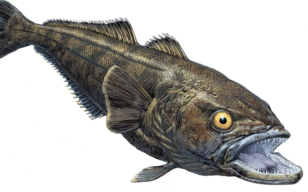
Meet the Patagonian Toothfish. This adorable little monster is a 6’ bottom feeder. What would you rename it if you want to start selling it in fancy restaurants?
Brand Advertising
- Brand vs. Performance advertising
- Programmatic advertising
- Does advertising build brands?
- Measuring ad impact
Brand Ads vs. Performance Ads?
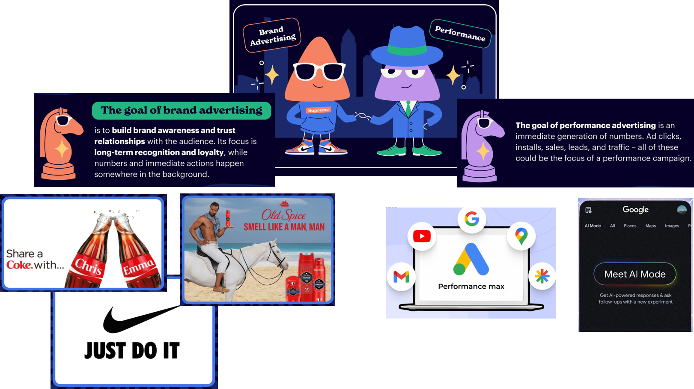
Brand and performance ads differ in their time horizon, content, measurability, and optimizability. Which approach do you think is better?
Brand is Dead?
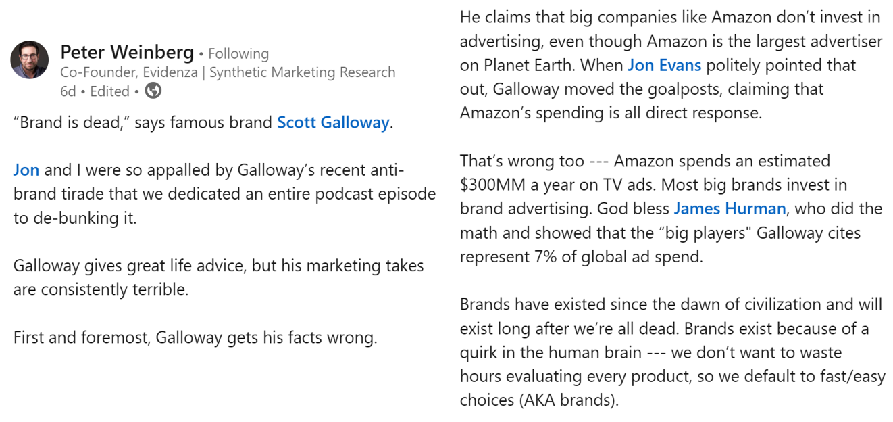
We’ve been hearing takes like this for generations. Every new channel promises to replace brand advertising with something more measurable. So far brand keeps not being dead. Why not?
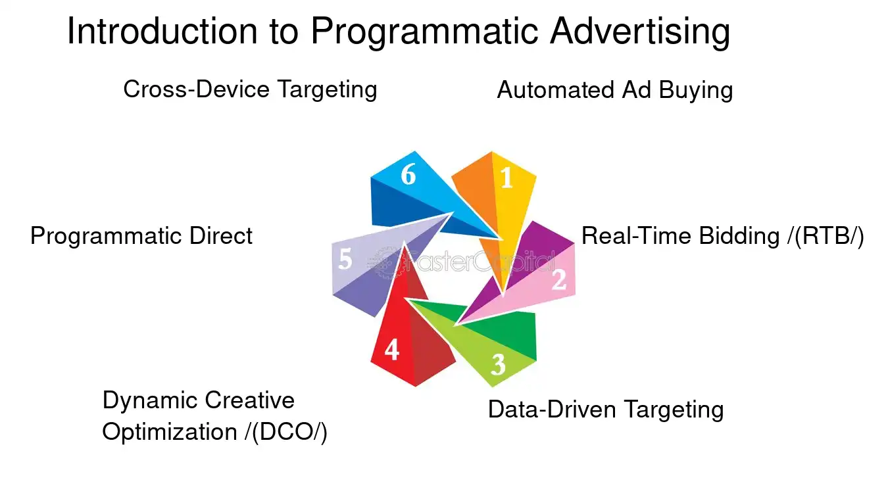
“Programmatic” means using technology to automate and optimize the ad buying process. Initially, these technologies were developed in the 2000s to allocate unsold ad inventory, but they are now at the top of the food chain
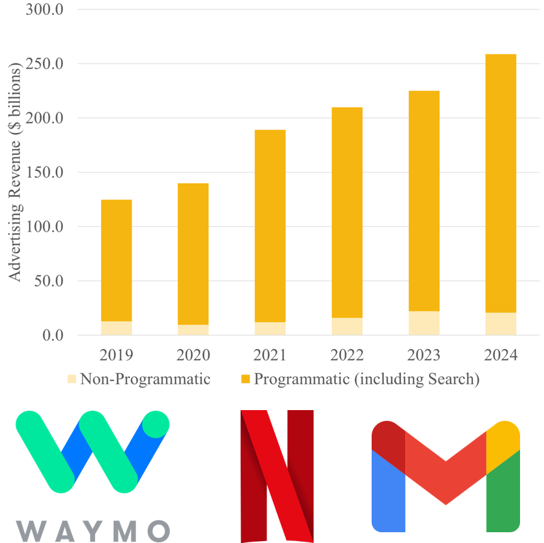
Programmatic advertising revenue basically doubled from 2019 to 2024. Similarity to Waymo driving (“the world’s most experienced driver”), Netflix recommendations, or Gmail spam filters: The more ads placed, the more successes and failures observed, the better the placement algorithms can get
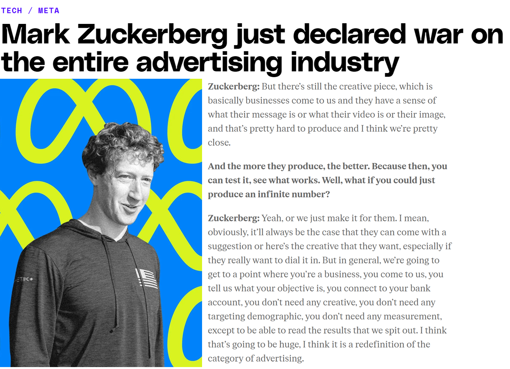
Zuckerberg poses provocative questions. Do platforms still need advertisers to supply advertisements? Would you sign up to connect your bank account?
Programmatic downsides
- Infrastructure maximizes correlational returns
- Attribution/credit “stealing”
- Many relevant outcomes: Difficult to measure what matters most
- Goliath sellers, illegal monopolies, enshittification
- Fraud, Algorithmic opacity, Privacy regulations
- “Ad Tech Tax”: 20-50% of ad spend
You might ideally want programmatic infrastructure to maximize causal sales lift, but it is not designed that way. Why do you think that is?
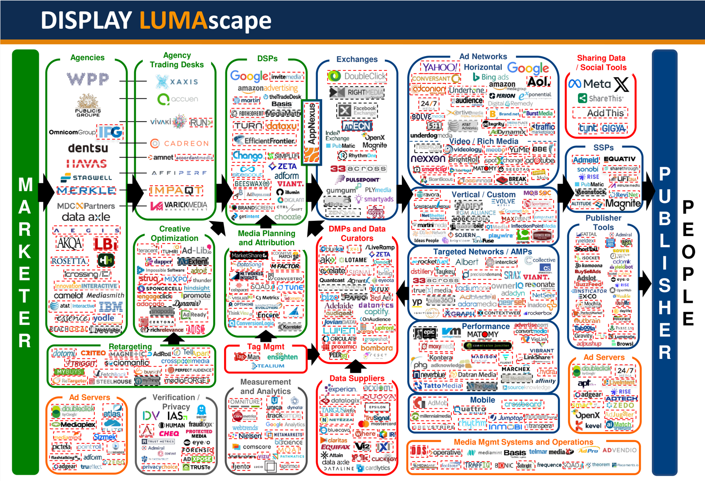
The ad tech tax feeds the ad tech ecosystem. The LUMAscape maps the ad tech supply chain. Each box represents a category of vendors working together to promise the “right ad, right person, right time”
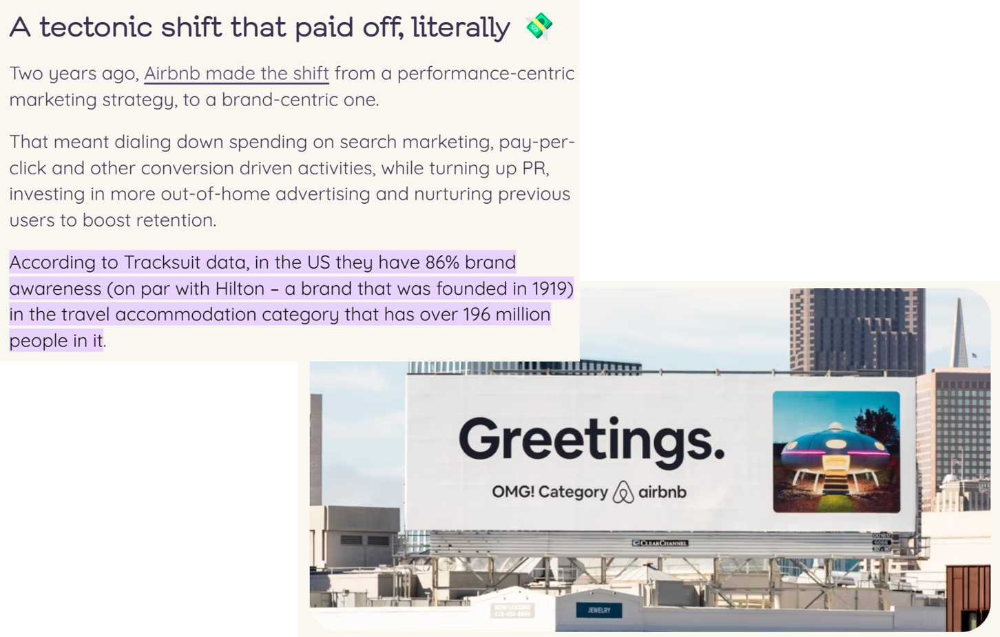
Airbnb shifted from performance ads to brand ads, and said the shift paid off. Should other companies follow suit?

Airbnb’s ad agency argues that Airbnb’s high preference:consideration ratio justifies the shift to brand ads… but this viz looks funky
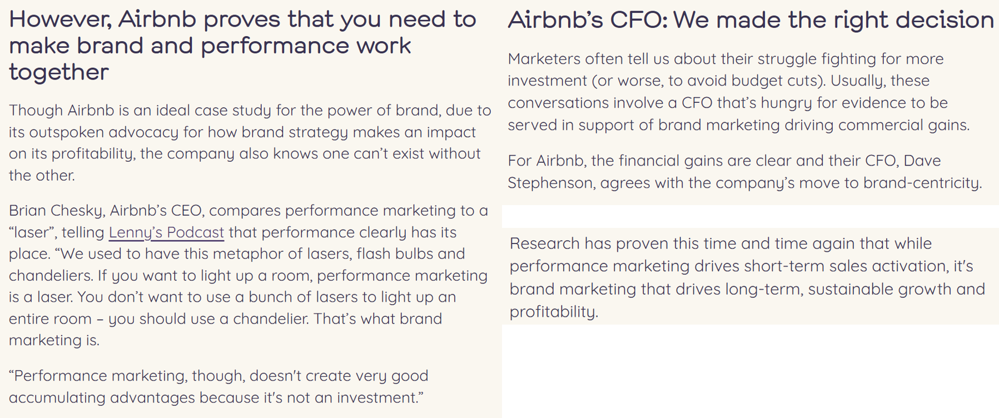
Most large companies run both brand campaigns and performance campaigns, but it is hard to determine the optimal split of advertising budget between them, as we don’t have great ways of establishing returns on brand campaigns
Does advertising build brands? Toyota
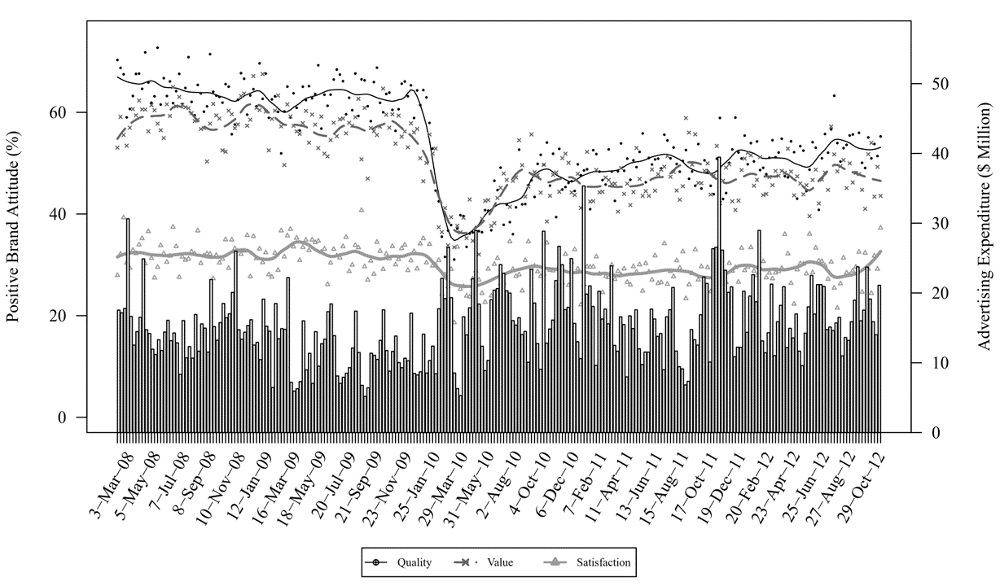
Weekly brand surveys (dots) and moving averages (lines), with weekly ad spend as columns. The 2010 accelerator recall hurt Toyota’s brand. Advertising increased afterward and brand attitudes slowly recovered
Does advertising build brands? Coke
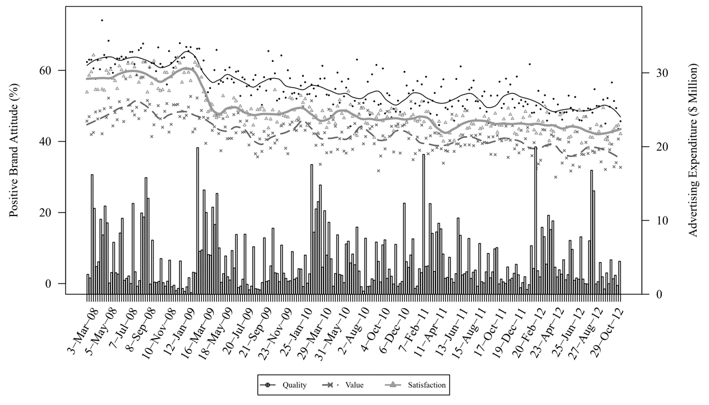
Coke’s brand metrics slipped as soda lost popularity. Huge Super Bowl ad-spend spikes – not much bounce in brand tracking
Does advertising build brands? Apple
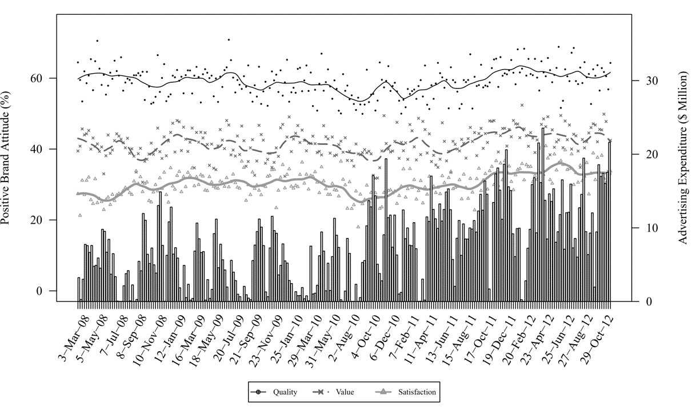
Apple’s brand turned upward in late 2010, after Apple introduced the iPad and started advertising more. Ad spending and product quality often correlate
Advertising and brand attitudes
- We regressed brand tracking statistics on brand ad spending of various types, using multiple strategies to control for unobservables
- Findings:
- Own advertising increases brand perceptions
- Competitor advertising decreases brand perceptions
- Advertising looks like a prisoner’s dilemma
- Massive data needed to estimate precise effects
We analyzed 10 million brand surveys and $264B in ad spend by 575 brands in 37 categories over 5 years. This was the largest observational analysis to date, suggesting that advertising is a prisoner’s dilemma game that incentivizes brands to over-invest
Ads Measurement Approaches
- Marketing Mix Models
- Multi-touch Attribution
- Incrementality Testing
- Marketers’ word for experimental/causal lift
- A/B/…/n testing, geo-lift tests, going-dark designs
- Quasi-experiments
- Instrumental variables, synthetic controls
Large marketers usually use multiple methods in parallel. Each approach has known strengths and weaknesses. Ultimately the CFO and CMO decide what gets funded, and how results affect decisions
Tying Things Together
- Brand advertising
- Should make performance ads more effective
- Long-term, high-cost, requires strategic commitment
- Hard to measure incremental returns
- Possible to measure correlational returns
- Performance advertising
- Highly targeted, low-cost, short-term, no attachments
- Definitely possible to measure incremental returns
- Pray to the algorithmic overlords
- Popular theory: More brand ads in “search markets,” more performance ads in “selection markets”
- Search markets: Consumer usually searches, eg car insurance
- Selection markets: Consumer usually chooses from a set, eg grocery store
Brand and performance ads are substitutes in the short run and complements in the long run
Toolkit: Find wtp for sponsorship
- We can pay a celebrity brand \(\$W\) to sponsor our phone. Conjoint estimates indicate the sponsorship will increase phone brand utility from \(\hat\beta\) to \(\hat\beta'\). Should we do it?
- Let \(\pi_0=q_j(p_j-c)\) be current contribution
- Let \(q'_j(p_j)=N \hat{s}'_j(p_j)\) be celebrity-sponsored demand
- Calculate \(\pi_1=q'_j(p_j)(p_j-c)\)
- \(\pi_1-\pi_0\) is pure demand effect of celebrity association
- Find new optimal price \(p'_j\) for demand \(q'_j(p_j)\)
- Calculate \(\pi_2=q'_j(p'_j)(p'_j-c)\); associate with celebrity if \(\pi_2-\pi_0>W\)
- Discuss: What if the celebrity’s threat point is to associate with a competitor?
- Discuss: What if celebrity association persists multiple years?
- Discuss: What if there is a 20% chance that a celebrity scandal reduces \(\hat\beta'\) to \(\hat\beta''\lt\hat\beta\)?
Class script
- Two-dimensional grid search to optimize S1 and S2 prices simultaneously
- Assess profit effect of celebrity affiliation with brand, without price reoptimization
- Assess profit effect of celebrity affiliation, with joint price reoptimization

Wrapping up
Competition
- Find the Nash equilibrium in S1-vs-A1 pricing, under two celebrity-endorsement scenarios
- Scenario A: Samsung hires the celebrity (CCE applied to S1 and S2 utilities only)
- Step 1: For each A1 price in {$599, $649, $699, $749, $799, $849, $899, $949, $999}, find S1’s profit-maximizing price using the class dataset and week 6 model
out10 - Step 2: For each S1 price in {$599, $649, $699, $749, $799, $849, $899, $949, $999}, find A1’s profit-maximizing price (hold all other prices fixed; assume A1 marginal cost = $450)
- Step 3: Predict (p_S1, p_A1) at the intersection of the two best-response curves – this is the Nash equilibrium for Scenario A – and compute profits
- Step 1: For each A1 price in {$599, $649, $699, $749, $799, $849, $899, $949, $999}, find S1’s profit-maximizing price using the class dataset and week 6 model
- Scenario B: Apple hires the celebrity instead (CCE applied to A1 and A2 utilities)
- Steps 4-6: Repeat Steps 1-3 for Scenario B
- Plot all four best-response curves in (p_A1, p_S1) space; mark both Nash equilibria; compare profits across the two scenarios

Do not re-optimize prices of S2 or A2 at any point. This is our most challenging competition of the quarter. We won’t ask something this hard on midterm 2.
Recap
- Brands are consumer associations between company assets (products, trademarks, etc) and related concepts
- Mental real estate: We can influence it but we don’t own it
- Brands work by establishing credibility, rapid communication, personality/self-expression and gestalt
- Brand/performance advertising debate trades off LR correlations vs. SR causal effects
- Demand models can quantify returns to brand investments

Going further
- Gordon et al (2026): Predicted Incrementality for Experimentation
- Advertising and brand attitudes: Evidence from 575 brands over five years (QME 2019)
- Swaminathan et al. (2020): Branding in a hyperconnected world (JMR)